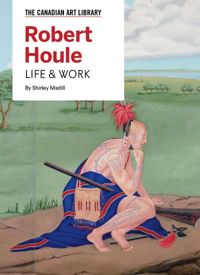
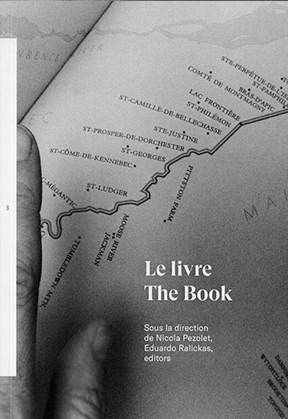
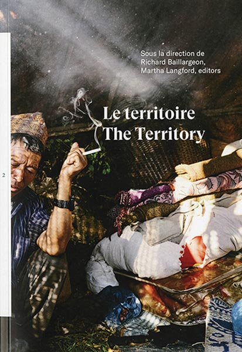
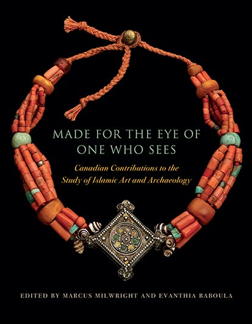
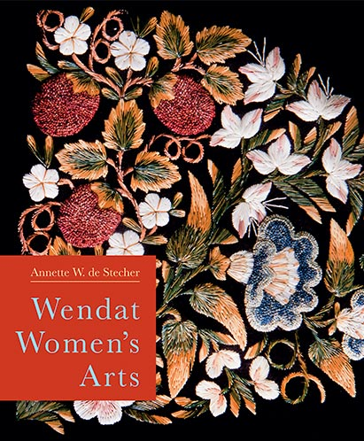

about
schedule
Publishers
Art Canada Institute

Artexte


Blue Medium Press
Dalhousie Architectural Press
McGill-Queen's University Press
Save 30% on all books with code
MQEX
:
mqup.ca


RACAR
UBC Press/Agency


")
")

")